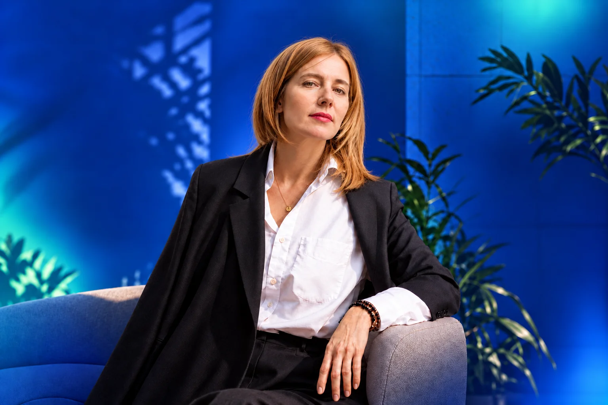

«Я всё держу
на себе»
Много ответственности, трудно отпустить контроль. Даже отдых превращается в ещё одну задачу.

Психолог · консультант · куратор
Когда вокруг много неопределённости, тревога может мешать принимать решения и строить планы.
Помогаю разобраться в своих переживаниях, найти опору и понять, как двигаться дальше.
Обсудить мой запросО подходеКонсультирую с 2022 года
500+ часов практики
Точка перемен
Большинство людей живут свою не самую счастливую жизнь, потому что привыкают смотреть на себя через очень маленькую рамку.
Много ответственности, трудно отпустить контроль. Даже отдых превращается в ещё одну задачу.
Привычная работа или отношения больше не устраивают. А новое направление пока не складывается.
Знаете и умеете многое, но трудно заявить о себе, назвать цену, дать своему делу место в жизни.
Обстоятельства меняются, а реакции и переживания остаются знакомыми. Хочется понять, что за этим стоит.
Можно прийти и без чёткого запроса
Начнём с того, что сейчас происходит с вами
Искусство видеть больше
В человеке, в жизни, в возможностях
Давайте познакомимся
Психолог и куратор-консультант в сфере искусства
Тридцать лет я руководила проектами в сфере искусства: работала с людьми, творческими идеями и их воплощением. С 2022 года провожу онлайн-консультации по вопросам реализации человека.
Этот опыт помогает мне видеть за запросом целую жизнь — с работой, отношениями, семьёй, творчеством и поиском смысла.
Ко мне приходят мужчины и женщины, которые уже не хотят жить по-старому, но ещё не разобрались, как по-новому.
Ближе познакомитьсяМой подход
Замечать, что происходит внутри. Давать место своим чувствам и желаниям.
Выберите точку — откройте смысл
Фотограф выбирает небольшой фрагмент огромного мира. Всё за пределами кадра исчезает из виду. Так и мы иногда принимаем привычный взгляд на себя за всю реальность.
С детства мы слышим «тебе это не дано», «у нас в семье все такие», «уже поздно что-то менять». Постепенно эти слова становятся рамкой, которая ограничивает представление о себе и своих возможностях.
Искусство, книги, путешествия и новые знания дают другие точки зрения. Привычная картина мира становится шире — и в ней появляется больше места для собственной жизни.
На консультациях мы исследуем, как в течение жизни складывался ваш взгляд на себя и какие убеждения стали для вас ограничивающей рамкой. Разбираемся, что мешает менять то, что больше не устраивает.
Обращаемся к вашим чувствам, опыту и желаниям, чтобы лучше понять себя и увидеть возможности за пределами привычных представлений. Ищем, как выстроить жизнь, в которой больше того, что важно именно вам.
В практике сочетаются символическое моделирование, метод «Чистый язык», ДПДГ и другие современные подходы к работе с эмоциональной памятью.
Внимание уделяется не только логике и рациональному анализу, но и имплицитной памяти — тому, что трудно выразить словами: чувствам, телесным ощущениям, эмоциональным реакциям и глубинным способам воспринимать мир.
В основе такого подхода — современные исследования памяти и механизм реконсолидации, биологический процесс, который позволяет изменять ранее сформированные эмоциональные воспоминания.
Человек способен жить значительно интереснее, глубже и масштабнее, чем привык думать.
Форматы работы
Три способа сотрудничества — онлайн или очно в Москве. Выбор зависит от желаемой интенсивности и вашего времени.
Этот формат подходит тем, кто готов к комплексным изменениям.
Абонемент от четырёх встреч. Последовательная работа, в которой мы можем уделить внимание не только отдельному запросу, но и более широким изменениям во всех сферах жизни.
График встреч составляем индивидуально, исходя из ваших задач и взаимных договорённостей.
Подходит тем, кто хочет действовать регулярно, но не располагает возможностью встречаться каждую неделю.
Индивидуальная работа с одним актуальным запросом. Встречи проходят два раза в месяц, что позволяет сохранять последовательность, отслеживать изменения и постепенно двигаться к желаемому результату.
Для тех, кому удобнее одна продолжительная встреча в месяц.
За это время мы обычно успеваем исследовать несколько взаимосвязанных тем.
Подходит тем, кто предпочитает один раз в месяц или не имеет возможности встречаться чаще.
Как выбрать? Если вы не уверены, какой вариант подойдёт именно вам, мы обсудим это на первой встрече и определим оптимальный вариант
Помимо индивидуальных консультаций, я провожу ретриты, групповые встречи и форумы. Ближайшие события — в моём Telegram-канале.
Лара, спасибо за опыт первой встречи! Вчера было очень глубокое погружение в состояние гипноза. Понравилось то, что в нём я ощущал себя безопасно и комфортно ☀️
Сегодня состояние энергичное! с чистым желанием творить)) с утра поработал над подвисшими проектами. Еду на две рабочие встречи и в целом чувствую легкость и уверенность в своей эффективности.
Я заметил, что я заново как будто на автомате вспоминаю болезненные жизненные моменты, но погрузиться не могу в них. Меня прямо выталкивает оттуда, и воспоминания, даже если они у меня и есть, сейчас не вызывают никаких эмоций, и я больше не «загоняюсь» по ним.
Хочу сказать Ларисе большое спасибо, за то, что за небольшой срок, мы сумели меня «раскрутить», докопаться и это уже принесло свой эффект. Впереди ещё есть работа и я уже в предвкушении от эффектов и результатов, которые намечаются.
У меня перестали колобродить в голове навязчивые мысли. Я перестала постоянно себя обесценивать и погружать в негатив. Причём по мне этого никогда особо и не скажешь. Я всегда производила впечатление позитивного, активного человека. Просто люди не знали, какая борьба при этом происходила у меня внутри.
Я практически не замечаю негативных мыслей. Иногда что-то появляется, но это уже скорее какое-то далёкое эхо из прошлой жизни. Оно приходит и уходит, а я не проваливаюсь туда, как раньше.
В результате это позволило нам постепенно выстроить отношения заново, заново выстроить доверие. Понять и простить друг друга. Считаю что Лариса сыграла в этом процессе роль катализатора. Она не спасала брак, но она помогла мне войти в контакт с самим собой во время этого кризиса. И это помогло мне пройти через всё это и не наломать дров.
Очень благодарен Ларисе за это сопровождение в путешествии к себе: более счастливому и цельному.
Полные истории и больше отзывов — в Telegram-канале
В отзывах клиенты делятся своим опытом. У каждого работа проходит по-своему.
Перед первой встречей
Расскажите, что сейчас происходит и что хотелось бы изменить. Не нужно заранее подбирать правильные слова или знать название своего запроса.
Напишите мне в Telegram. Обсудим вашу ситуацию, подходящий формат, время и детали оплаты. Индивидуальные консультации проходят онлайн или очно в Москве. Место очной встречи согласуем при записи.
Можно начать с одной консультации. Вопрос продолжения обсудим с учётом вашего запроса и опыта первой встречи.
Я не работаю с клиническими случаями. Моя практика посвящена жизненным и профессиональным ситуациям, отношениям и реализации человека.
С чего начнём
Разобраться, что происходит в отношениях, с деньгами и страхами. Понять, откуда берётся усталость и что забирает ваши силы.
Лучше понимать близких и окружающих: замечать мотивы, видеть связи между событиями и осознаннее выбирать, как действовать дальше.
Определить своё направление, раскрыть силу и понять, как воплотить задуманное в жизнь — от личных целей до влияния на большие системы.
Какое из этих направлений сейчас ваше? Напишите Ларисе — с этого и начнётся разговор
Обсудить мой запрос